2025 National 5 Biology - Paper 2 questions
Source: Scottish Qualifications Authority (SQA) / Qualifications Scotland. This is a StemInteract HTML companion, not an official HTML edition. Selectable text is supplied alongside original page images. Use the images or original PDF for equations, powers, fractions, vector notation, tables and diagrams; text extraction cannot fully preserve mathematical layout.
Jump to a question
PDF page 1
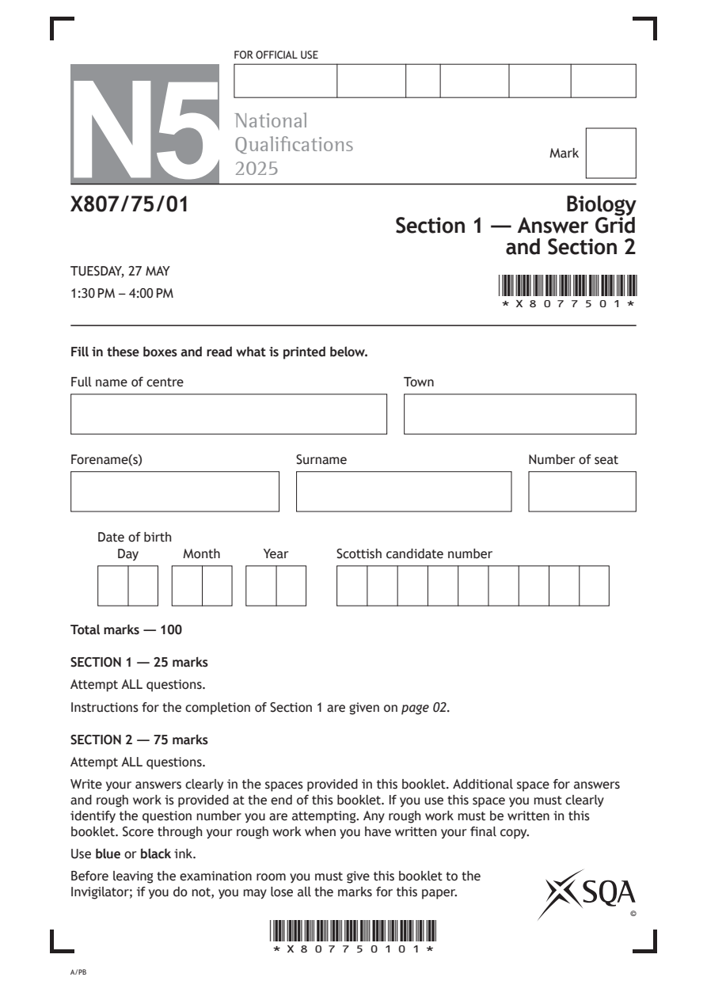
Selectable page text
FOR OFFICIAL USE
N5
National
Qualications
Mark
2025
X807/75/01 Biology
Section 1 — Answer Grid
and Section 2
TUESDAY, 27 MAY
1:30 PM – 4:00 PM
*X8077501*
Fill in these boxes and read what is printed below.
Full name of centre Town
Forename(s) Surname Number of seat
Date of birth
Day Month Year Scottish candidate number
Total marks — 100
SECTION 1 — 25 marks
Attempt ALL questions.
Instructions for the completion of Section 1 are given on page 02.
SECTION 2 — 75 marks
Attempt ALL questions.
Write your answers clearly in the spaces provided in this booklet. Additional space for answers
and rough work is provided at the end of this booklet. If you use this space you must clearly
identify the question number you are attempting. Any rough work must be written in this
booklet. Score through your rough work when you have written your final copy.
Use blue or black ink.
Before leaving the examination room you must give this booklet to the
Invigilator; if you do not, you may lose all the marks for this paper.
©
*X807750101*
A/PBPDF page 2
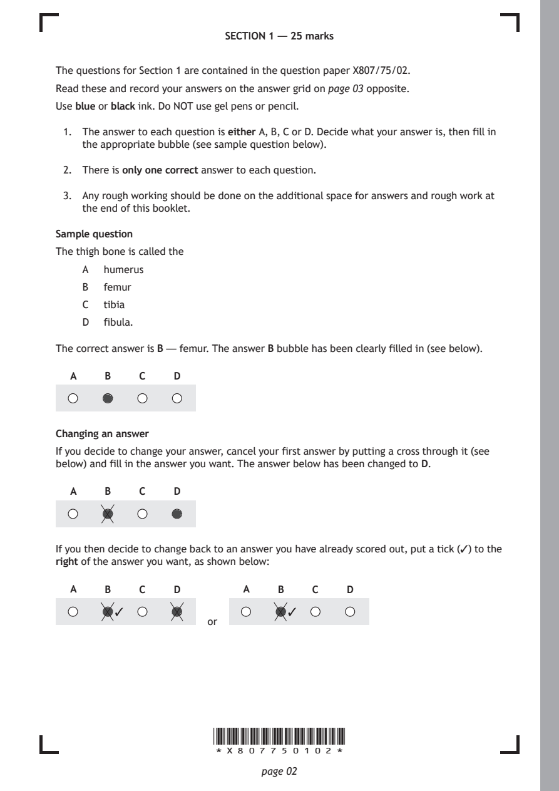
Selectable page text
SECTION 1 — 25 marks
The questions for Section 1 are contained in the question paper X807/75/02.
Read these and record your answers on the answer grid on page 03 opposite.
Use blue or black ink. Do NOT use gel pens or pencil.
1. The answer to each question is either A, B, C or D. Decide what your answer is, then fill in
the appropriate bubble (see sample question below).
2. There is only one correct answer to each question.
3. Any rough working should be done on the additional space for answers and rough work at
the end of this booklet.
Sample question
The thigh bone is called the
A humerus
B femur
C tibia
D fibula.
The correct answer is B — femur. The answer B bubble has been clearly filled in (see below).
A B C D
Changing an answer
If you decide to change your answer, cancel your first answer by putting a cross through it (see
below) and fill in the answer you want. The answer below has been changed to D.
A B C D
If you then decide to change back to an answer you have already scored out, put a tick (✓) to the
right of the answer you want, as shown below:
A B C D A B C D
or
*X807750102*
page 02PDF page 3

Selectable page text
SECTION 1 — Answer grid
*OBJ25AD1*
A B C D
1
2
3
4
5
6
7
8
9
10
11
12
13
14
15
16
17
18
19
20
21
22
23
24
25
*X807750103*
page 03 [Turn overPDF page 4

Selectable page text
[BLANK PAGE]
DO NOT WRITE ON THIS PAGE
*X807750104*
page 04PDF page 5
Paper 2, Question 1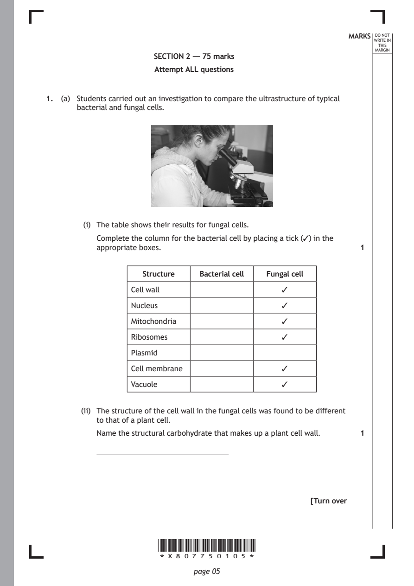
Selectable page text
MARKS _{W}^{D}_{R}^{O}_{I} _{T}^{N}OT
E IN
THIS
MARGIN
SECTION 2 — 75 marks
Attempt ALL questions
1. (a) Students carried out an investigation to compare the ultrastructure of typical
bacterial and fungal cells.
(i) The table shows their results for fungal cells.
Complete the column for the bacterial cell by placing a tick (✓) in the
appropriate boxes. 1
Structure Bacterial cell Fungal cell
Cell wall ✓
Nucleus ✓
Mitochondria ✓
Ribosomes ✓
Plasmid
Cell membrane ✓
Vacuole ✓
(ii) The structure of the cell wall in the fungal cells was found to be different
to that of a plant cell.
Name the structural carbohydrate that makes up a plant cell wall. 1
[Turn over
*X807750105*
page 05PDF page 6
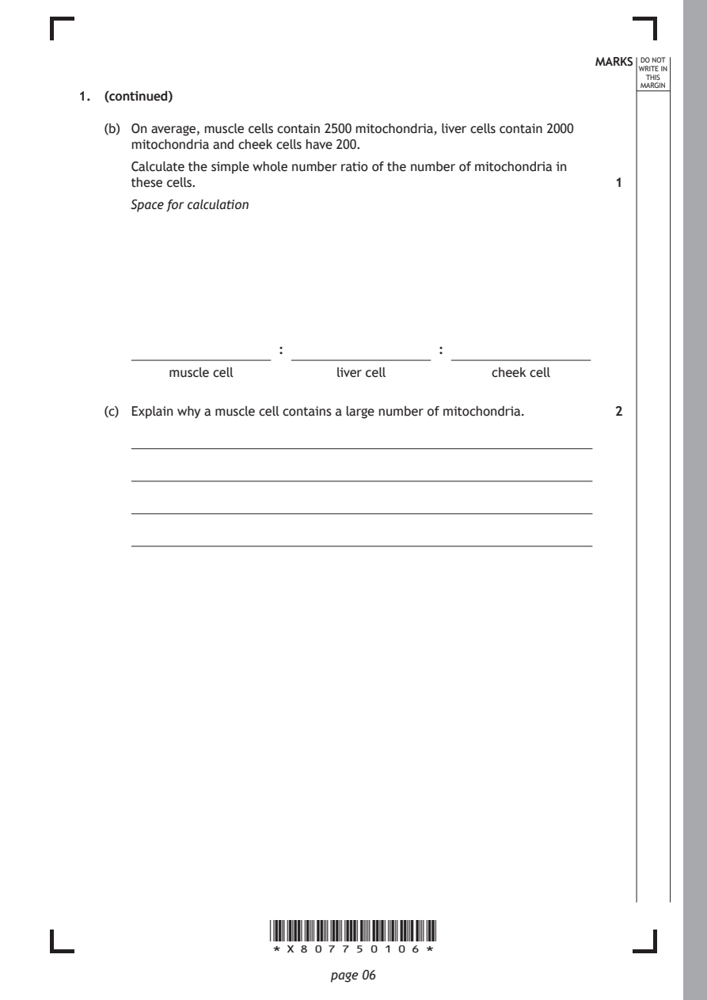
Selectable page text
MARKS _{W}^{D}_{R}^{O}_{I} _{T}^{N}OT
E IN
THIS
MARGIN
1. (continued)
(b) On average, muscle cells contain 2500 mitochondria, liver cells contain 2000
mitochondria and cheek cells have 200.
Calculate the simple whole number ratio of the number of mitochondria in
these cells. 1
Space for calculation
: :
muscle cell liver cell cheek cell
(c) Explain why a muscle cell contains a large number of mitochondria. 2
*X807750106*
page 06PDF page 7
Paper 2, Question 2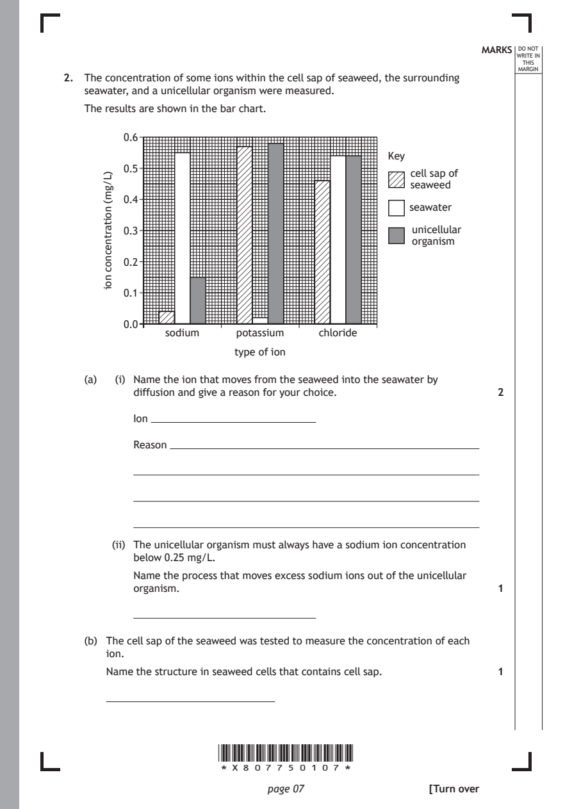
Selectable page text
MARKS _{W}^{D}_{R}^{O}_{I} _{T}^{N}OT
E IN
THIS
MARGIN
2. The concentration of some ions within the cell sap of seaweed, the surrounding
seawater, and a unicellular organism were measured.
The results are shown in the bar chart.
0.6
0.5
0.4
0.3
0.2
0.1
0.0
*X807750107*
page 07
)L/gm(
noitartnecnoc
noi
Key
cell sap of
seaweed
seawater
unicellular
organism
sodium potassium chloride
type of ion
(a) (i) Name the ion that moves from the seaweed into the seawater by
diffusion and give a reason for your choice. 2
Ion
Reason
(ii) The unicellular organism must always have a sodium ion concentration
below 0.25 mg/L.
Name the process that moves excess sodium ions out of the unicellular
organism. 1
(b) The cell sap of the seaweed was tested to measure the concentration of each
ion.
Name the structure in seaweed cells that contains cell sap. 1
[Turn overPDF page 8
Paper 2, Question 3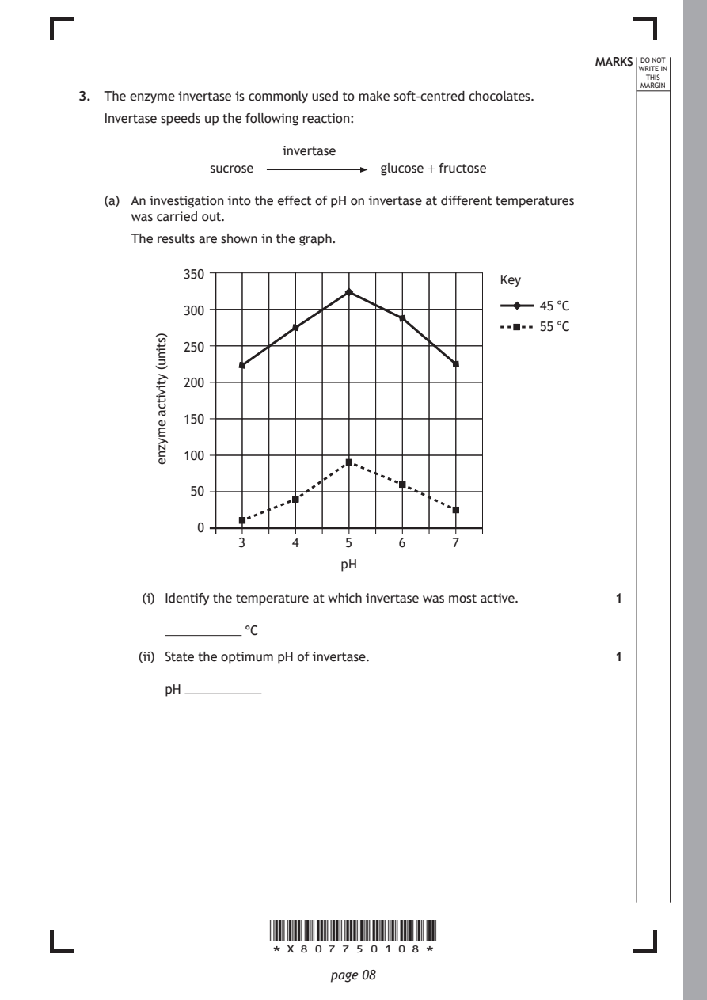
Selectable page text
MARKS _{W}^{D}_{R}^{O}_{I} _{T}^{N}OT
E IN
THIS
MARGIN
3. The enzyme invertase is commonly used to make soft-centred chocolates.
Invertase speeds up the following reaction:
invertase
sucrose glucose + fructose
(a) An investigation into the effect of pH on invertase at different temperatures
was carried out.
The results are shown in the graph.
350
300
55 °C
250
200
150
100
50
0
*X807750108*
page 08
)stinu(
ytivitca
emyzne
Key
45 °C
3 4 5 6 7
pH
(i) Identify the temperature at which invertase was most active. 1
��������������������� °C
(ii) State the optimum pH of invertase. 1
pH ���������������������PDF page 9
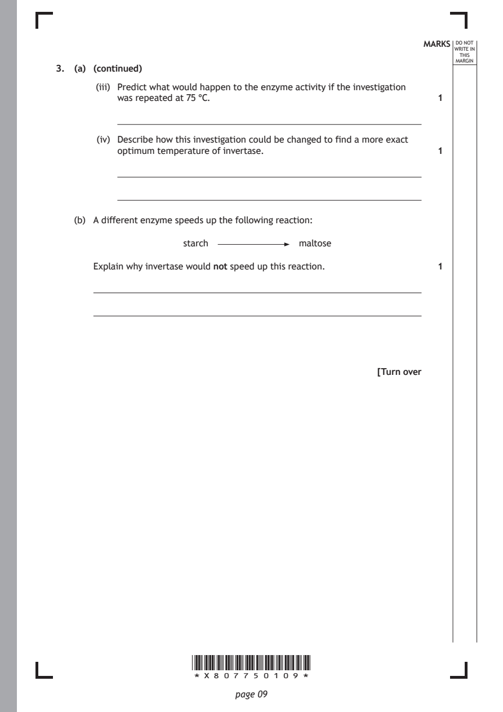
Selectable page text
MARKS _{W}^{D}_{R}^{O}_{I} _{T}^{N}OT
E IN
THIS
MARGIN
3. (a) (continued)
(iii) Predict what would happen to the enzyme activity if the investigation
was repeated at 75 °C. 1
(iv) Describe how this investigation could be changed to find a more exact
optimum temperature of invertase. 1
(b) A different enzyme speeds up the following reaction:
starch maltose
Explain why invertase would not speed up this reaction. 1
[Turn over
*X807750109*
page 09PDF page 10
Paper 2, Question 4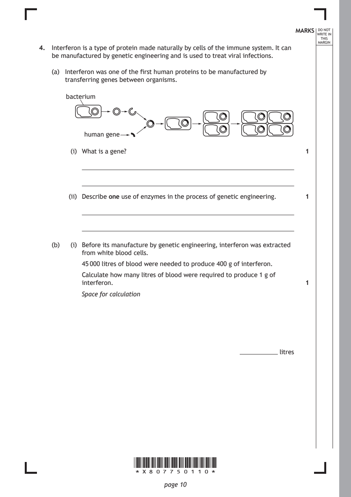
Selectable page text
MARKS _{W}^{D}_{R}^{O}_{I} _{T}^{N}OT
E IN
THIS
MARGIN
4. Interferon is a type of protein made naturally by cells of the immune system. It can
be manufactured by genetic engineering and is used to treat viral infections.
(a) Interferon was one of the first human proteins to be manufactured by
transferring genes between organisms.
bacterium
human gene
(i) What is a gene? 1
(ii) Describe one use of enzymes in the process of genetic engineering. 1
(b) (i) Before its manufacture by genetic engineering, interferon was extracted
from white blood cells.
45 000 litres of blood were needed to produce 400 g of interferon.
Calculate how many litres of blood were required to produce 1 g of
interferon. 1
Space for calculation
��������������������� litres
*X807750110*
page 10PDF page 11
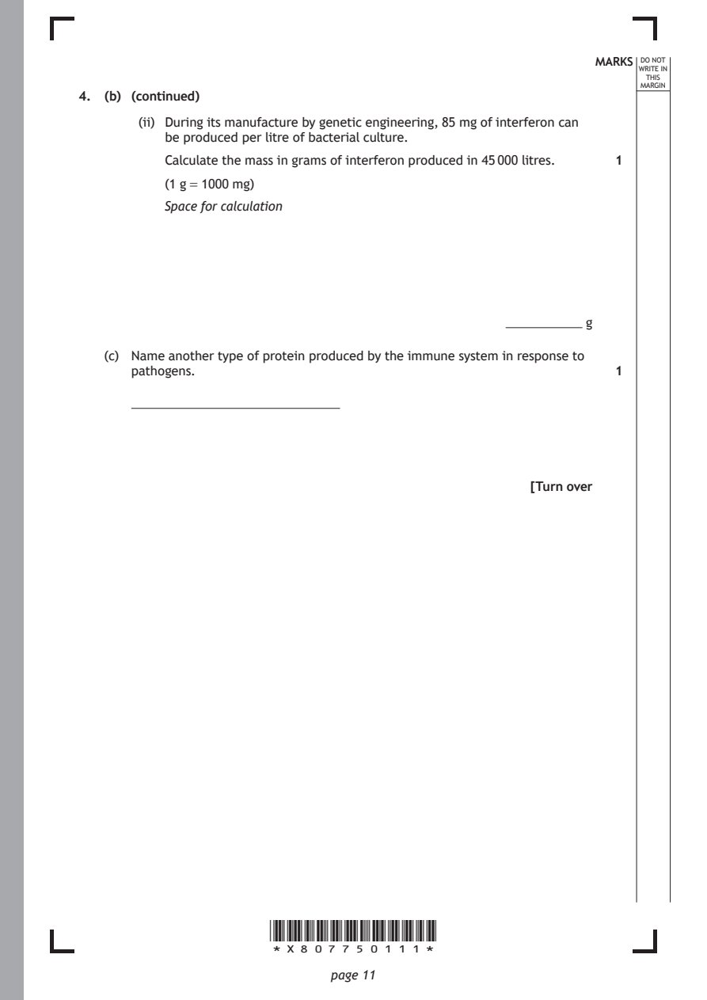
Selectable page text
MARKS _{W}^{D}_{R}^{O}_{I} _{T}^{N}OT
E IN
THIS
MARGIN
4. (b) (continued)
(ii) During its manufacture by genetic engineering, 85 mg of interferon can
be produced per litre of bacterial culture.
Calculate the mass in grams of interferon produced in 45 000 litres. 1
(1 g = 1000 mg)
Space for calculation
��������������������� g
(c) Name another type of protein produced by the immune system in response to
pathogens. 1
[Turn over
*X807750111*
page 11PDF page 12
Paper 2, Question 5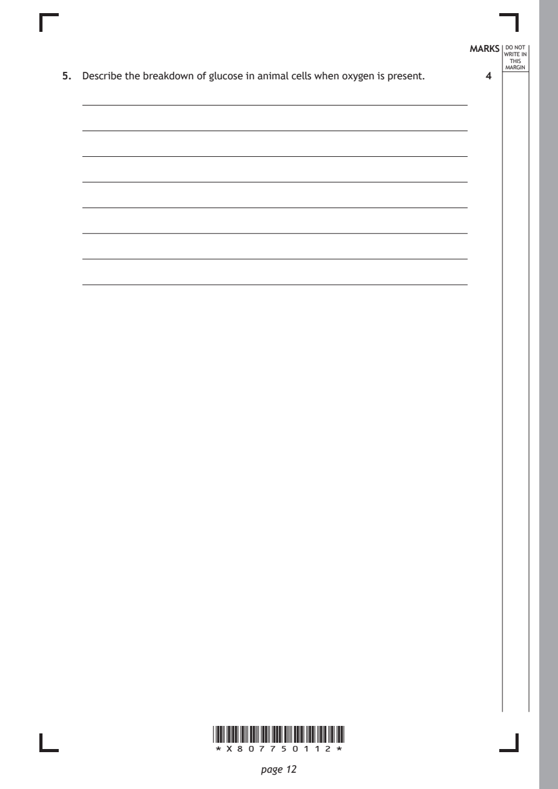
Selectable page text
MARKS _{W}^{D}_{R}^{O}_{I} _{T}^{N}OT
E IN
THIS
ARGIN
5. Describe the breakdown of glucose in animal cells when oxygen is present. 4 ^{M}
*X807750112*
page 12PDF page 13
Paper 2, Question 6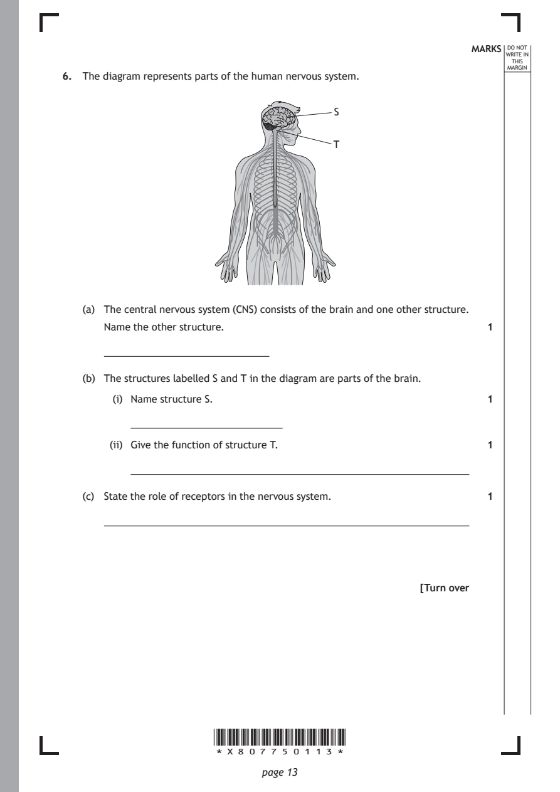
Selectable page text
MARKS _{W}^{D}_{R}^{O}_{I} _{T}^{N}OT
E IN
THIS
MARGIN
6. The diagram represents parts of the human nervous system.
S
T
(a) The central nervous system (CNS) consists of the brain and one other structure.
Name the other structure. 1
(b) The structures labelled S and T in the diagram are parts of the brain.
(i) Name structure S. 1
(ii) Give the function of structure T. 1
(c) State the role of receptors in the nervous system. 1
[Turn over
*X807750113*
page 13PDF page 14
Paper 2, Question 7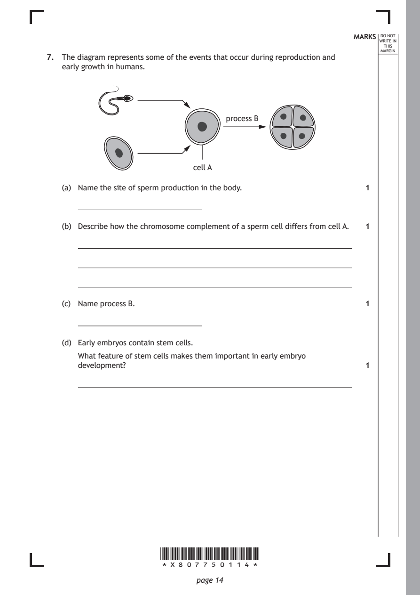
Selectable page text
MARKS _{W}^{D}_{R}^{O}_{I} _{T}^{N}OT
E IN
THIS
MARGIN
7. The diagram represents some of the events that occur during reproduction and
early growth in humans.
process B
cell A
(a) Name the site of sperm production in the body. 1
(b) Describe how the chromosome complement of a sperm cell differs from cell A. 1
(c) Name process B. 1
(d) Early embryos contain stem cells.
What feature of stem cells makes them important in early embryo
development? 1
*X807750114*
page 14PDF page 15
Paper 2, Question 8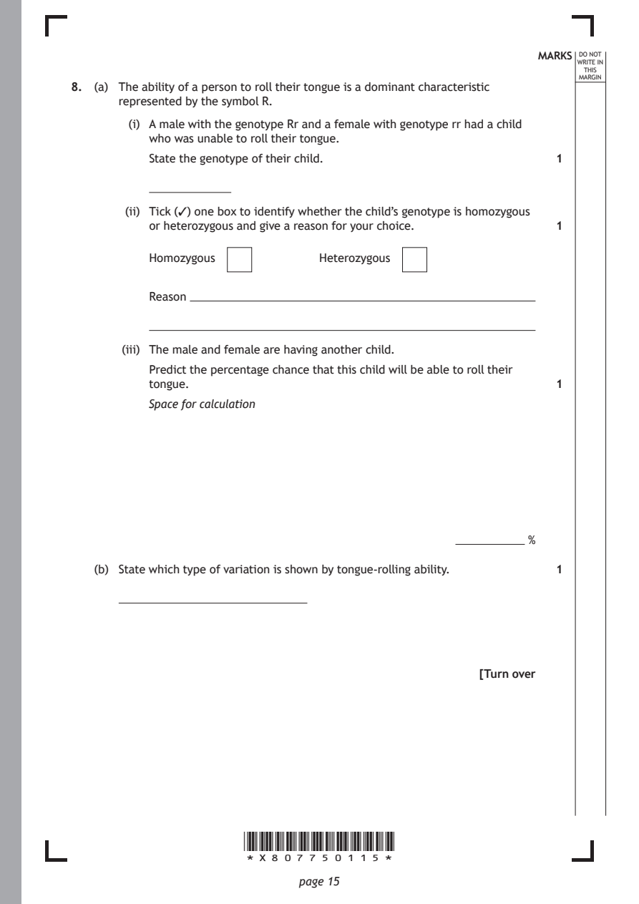
Selectable page text
MARKS _{W}^{D}_{R}^{O}_{I} _{T}^{N}OT
E IN
THIS
MARGIN
8. (a) The ability of a person to roll their tongue is a dominant characteristic
represented by the symbol R.
(i) A male with the genotype Rr and a female with genotype rr had a child
who was unable to roll their tongue.
State the genotype of their child. 1
(ii) Tick (✓) one box to identify whether the child’s genotype is homozygous
or heterozygous and give a reason for your choice. 1
Homozygous Heterozygous
Reason
(iii) The male and female are having another child.
Predict the percentage chance that this child will be able to roll their
tongue. 1
Space for calculation
��������������������� %
(b) State which type of variation is shown by tongue-rolling ability. 1
[Turn over
*X807750115*
page 15PDF page 16
Paper 2, Question 9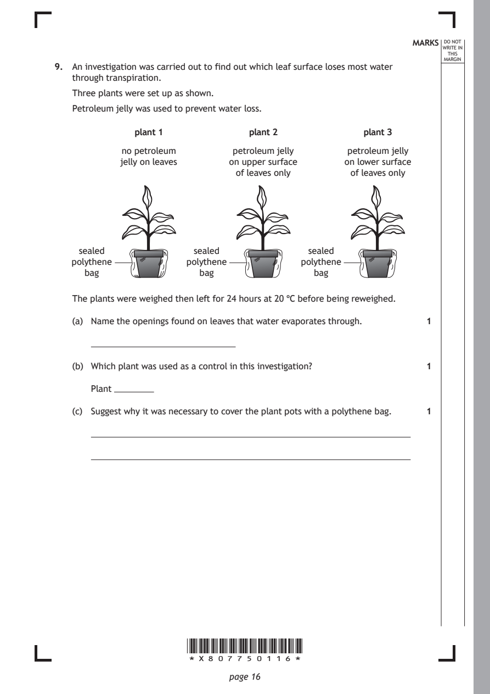
Selectable page text
MARKS _{W}^{D}_{R}^{O}_{I} _{T}^{N}OT
E IN
THIS
MARGIN
9. An investigation was carried out to find out which leaf surface loses most water
through transpiration.
Three plants were set up as shown.
Petroleum jelly was used to prevent water loss.
plant 1 plant 2 plant 3
no petroleum petroleum jelly petroleum jelly
jelly on leaves on upper surface on lower surface
of leaves only of leaves only
sealed sealed sealed
polythene polythene polythene
bag bag bag
The plants were weighed then left for 24 hours at 20 °C before being reweighed.
(a) Name the openings found on leaves that water evaporates through. 1
(b) Which plant was used as a control in this investigation? 1
Plant
(c) Suggest why it was necessary to cover the plant pots with a polythene bag. 1
*X807750116*
page 16PDF page 17
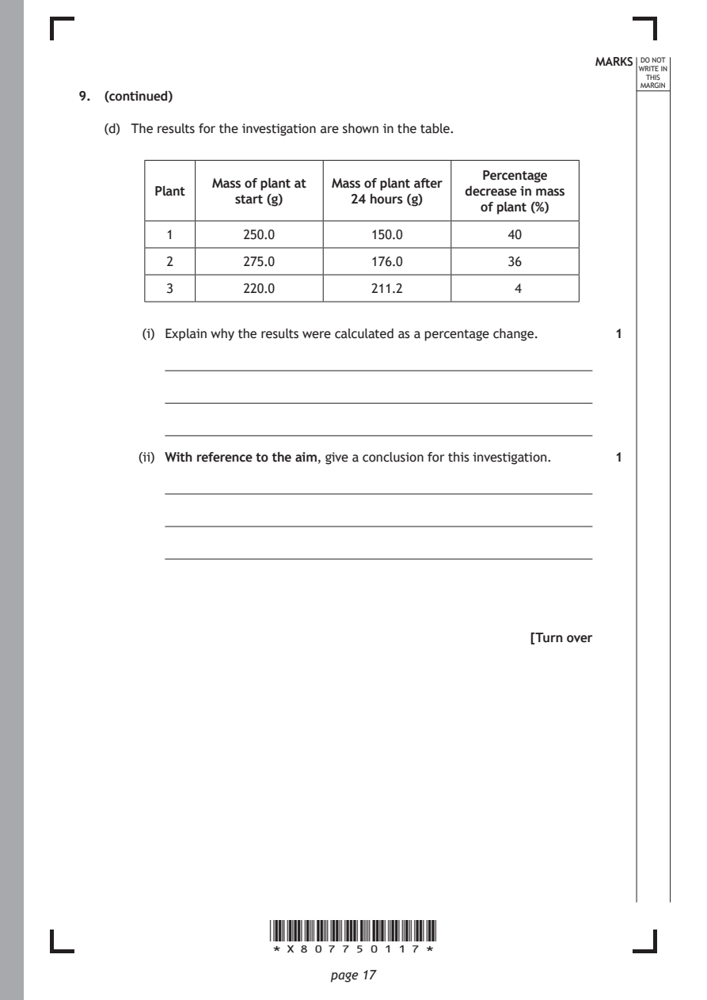
Selectable page text
MARKS _{W}^{D}_{R}^{O}_{I} _{T}^{N}OT
E IN
THIS
MARGIN
9. (continued)
(d) The results for the investigation are shown in the table.
Percentage
Mass of plant at Mass of plant after
Plant decrease in mass
start (g) 24 hours (g)
of plant (%)
1 250.0 150.0 40
2 275.0 176.0 36
3 220.0 211.2 4
(i) Explain why the results were calculated as a percentage change. 1
(ii) With reference to the aim, give a conclusion for this investigation. 1
[Turn over
*X807750117*
page 17PDF page 18
Paper 2, Question 10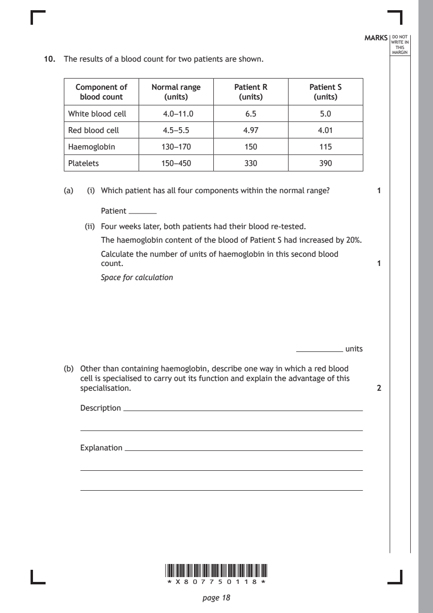
Selectable page text
MARKS _{W}^{D}_{R}^{O}_{I} _{T}^{N}OT
E IN
THIS
MARGIN
10. The results of a blood count for two patients are shown.
Component of Normal range Patient R Patient S
blood count (units) (units) (units)
White blood cell 4.0 –11.0 6.5 5.0
Red blood cell 4.5 – 5.5 4.97 4.01
Haemoglobin 130 –170 150 115
Platelets 150 – 450 330 390
(a) (i) Which patient has all four components within the normal range? 1
Patient
(ii) Four weeks later, both patients had their blood re-tested.
The haemoglobin content of the blood of Patient S had increased by 20%.
Calculate the number of units of haemoglobin in this second blood
count. 1
Space for calculation
��������������������� units
(b) Other than containing haemoglobin, describe one way in which a red blood
cell is specialised to carry out its function and explain the advantage of this
specialisation. 2
Description
Explanation
*X807750118*
page 18PDF page 19
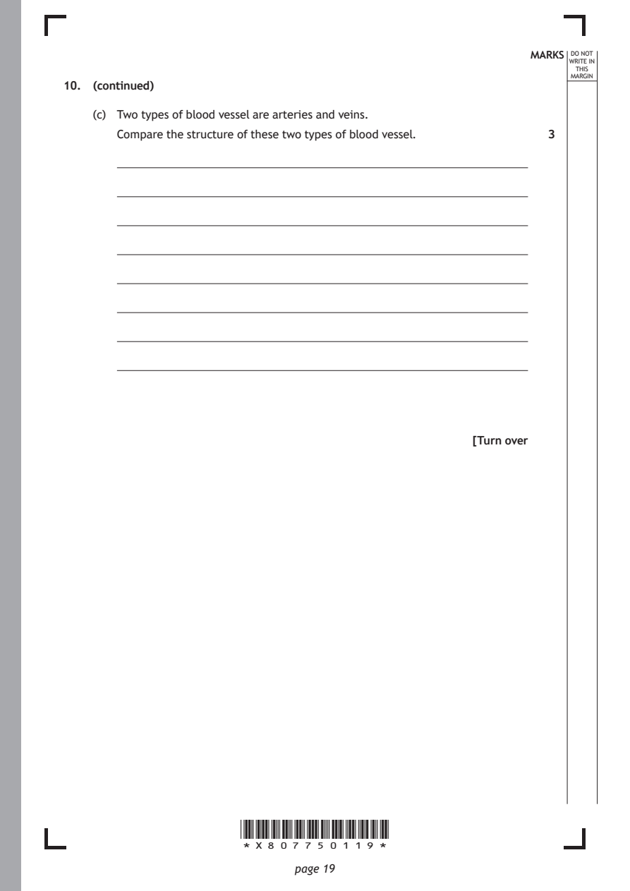
Selectable page text
MARKS _{W}^{D}_{R}^{O}_{I} _{T}^{N}OT
E IN
THIS
MARGIN
10. (continued)
(c) Two types of blood vessel are arteries and veins.
Compare the structure of these two types of blood vessel. 3
[Turn over
*X807750119*
page 19PDF page 20
Paper 2, Question 11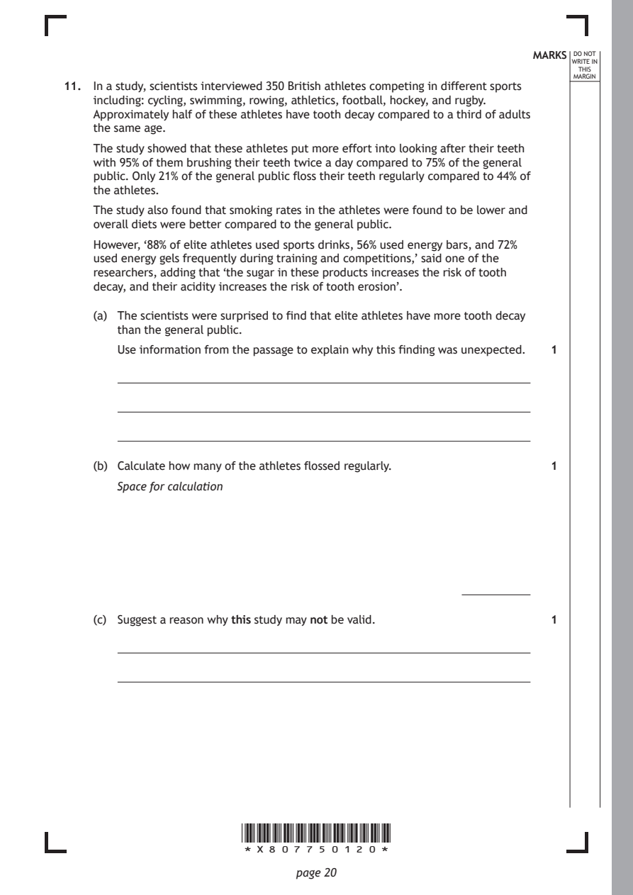
Selectable page text
MARKS _{W}^{D}_{R}^{O}_{I} _{T}^{N}OT
E IN
THIS
MARGIN
11. In a study, scientists interviewed 350 British athletes competing in different sports
including: cycling, swimming, rowing, athletics, football, hockey, and rugby.
Approximately half of these athletes have tooth decay compared to a third of adults
the same age.
The study showed that these athletes put more effort into looking after their teeth
with 95% of them brushing their teeth twice a day compared to 75% of the general
public. Only 21% of the general public floss their teeth regularly compared to 44% of
the athletes.
The study also found that smoking rates in the athletes were found to be lower and
overall diets were better compared to the general public.
However, ‘88% of elite athletes used sports drinks, 56% used energy bars, and 72%
used energy gels frequently during training and competitions,’ said one of the
researchers, adding that ‘the sugar in these products increases the risk of tooth
decay, and their acidity increases the risk of tooth erosion’.
(a) The scientists were surprised to find that elite athletes have more tooth decay
than the general public.
Use information from the passage to explain why this finding was unexpected. 1
(b) Calculate how many of the athletes flossed regularly. 1
Space for calculation
���������������������
(c) Suggest a reason why this study may not be valid. 1
*X807750120*
page 20PDF page 21
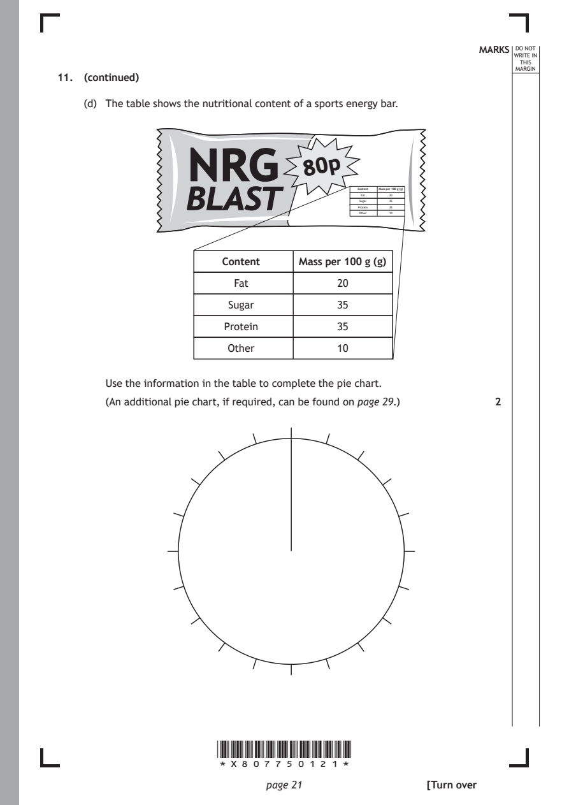
Selectable page text
MARKS _{W}^{D}_{R}^{O}_{I} _{T}^{N}OT
E IN
THIS
MARGIN
11. (continued)
(d) The table shows the nutritional content of a sports energy bar.
NRG
80p
BLAST Content Mass per 100 g (g)
Fat 20
Sugar 35
Protein 35
Other 10
Content Mass per 100 g (g)
Fat 20
Sugar 35
Protein 35
Other 10
Use the information in the table to complete the pie chart.
(An additional pie chart, if required, can be found on page 29.) 2
*X807750121*
page 21 [Turn overPDF page 22
Paper 2, Question 12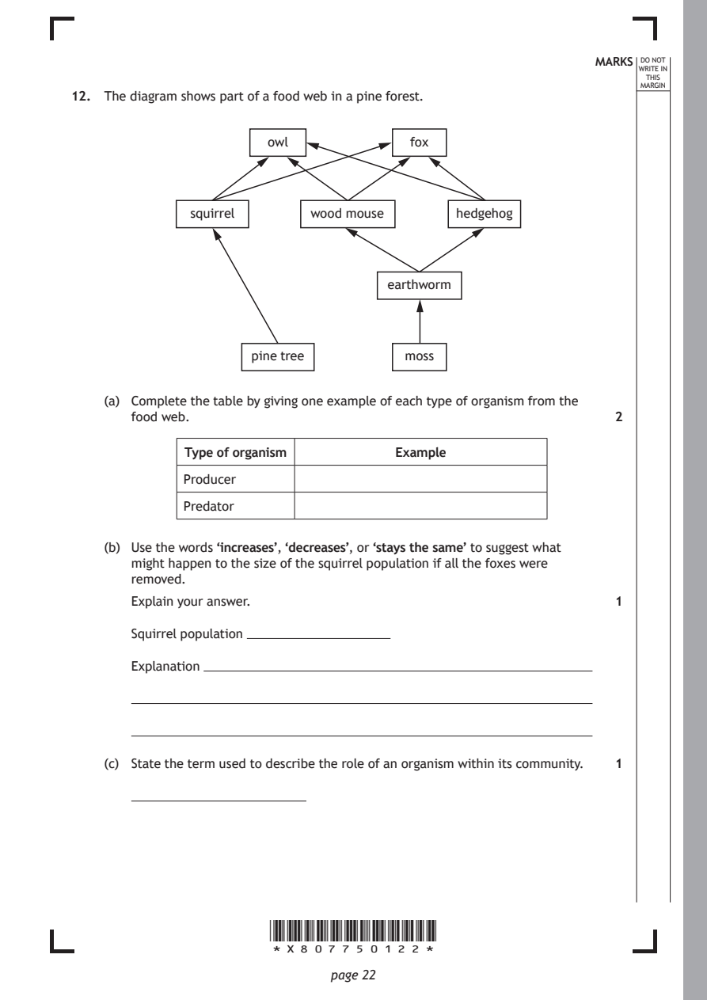
Selectable page text
MARKS _{W}^{D}_{R}^{O}_{I} _{T}^{N}OT
E IN
THIS
MARGIN
12. The diagram shows part of a food web in a pine forest.
owl fox
squirrel wood mouse hedgehog
earthworm
pine tree moss
(a) Complete the table by giving one example of each type of organism from the
food web. 2
Type of organism Example
Producer
Predator
(b) Use the words ‘increases’, ‘decreases’, or ‘stays the same’ to suggest what
might happen to the size of the squirrel population if all the foxes were
removed.
Explain your answer. 1
Squirrel population
Explanation
(c) State the term used to describe the role of an organism within its community. 1
*X807750122*
page 22PDF page 23
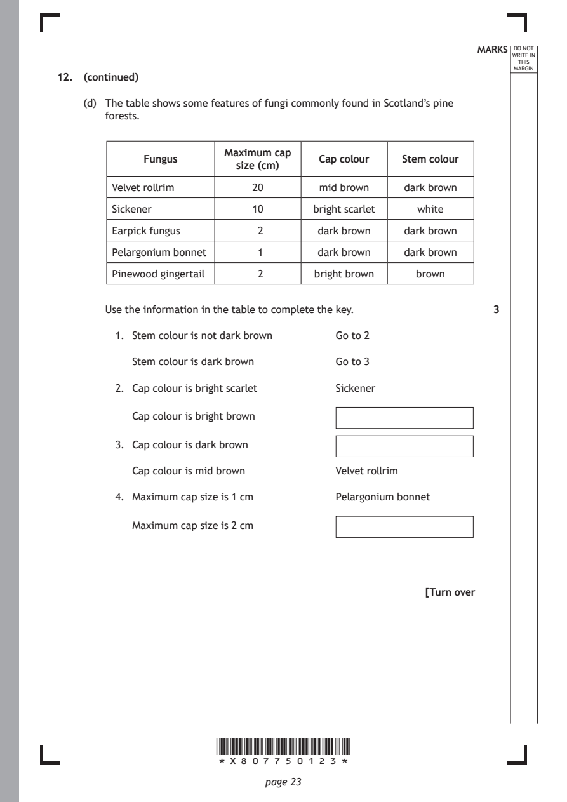
Selectable page text
MARKS _{W}^{D}_{R}^{O}_{I} _{T}^{N}OT
E IN
THIS
MARGIN
12. (continued)
(d) The table shows some features of fungi commonly found in Scotland’s pine
forests.
Maximum cap
Fungus Cap colour Stem colour
size (cm)
Velvet rollrim 20 mid brown dark brown
Sickener 10 bright scarlet white
Earpick fungus 2 dark brown dark brown
Pelargonium bonnet 1 dark brown dark brown
Pinewood gingertail 2 bright brown brown
Use the information in the table to complete the key. 3
1. Stem colour is not dark brown Go to 2
Stem colour is dark brown Go to 3
2. Cap colour is bright scarlet Sickener
Cap colour is bright brown
3. Cap colour is dark brown
Cap colour is mid brown Velvet rollrim
4. Maximum cap size is 1 cm Pelargonium bonnet
Maximum cap size is 2 cm
[Turn over
*X807750123*
page 23PDF page 24
Paper 2, Question 13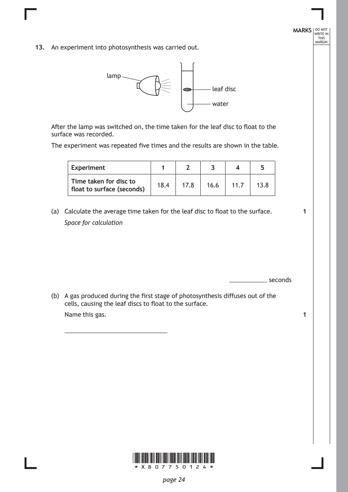
Selectable page text
MARKS _{W}^{D}_{R}^{O}_{I} _{T}^{N}OT
E IN
THIS
MARGIN
13. An experiment into photosynthesis was carried out.
lamp
leaf disc
water
After the lamp was switched on, the time taken for the leaf disc to float to the
surface was recorded.
The experiment was repeated five times and the results are shown in the table.
Experiment 1 2 3 4 5
Time taken for disc to
18.4 17.8 16.6 11.7 13.8
float to surface (seconds)
(a) Calculate the average time taken for the leaf disc to float to the surface. 1
Space for calculation
��������������������� seconds
(b) A gas produced during the first stage of photosynthesis diffuses out of the
cells, causing the leaf discs to float to the surface.
Name this gas. 1
*X807750124*
page 24PDF page 25
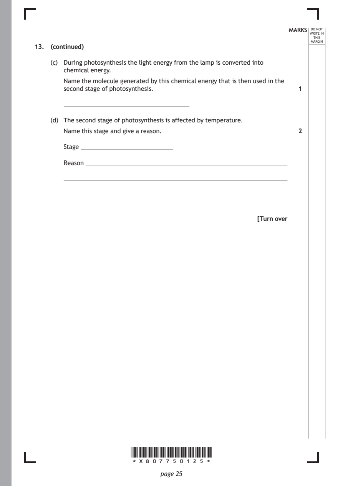
Selectable page text
MARKS _{W}^{D}_{R}^{O}_{I} _{T}^{N}OT
E IN
THIS
MARGIN
13. (continued)
(c) During photosynthesis the light energy from the lamp is converted into
chemical energy.
Name the molecule generated by this chemical energy that is then used in the
second stage of photosynthesis. 1
(d) The second stage of photosynthesis is affected by temperature.
Name this stage and give a reason. 2
Stage
Reason
[Turn over
*X807750125*
page 25PDF page 26
Paper 2, Question 14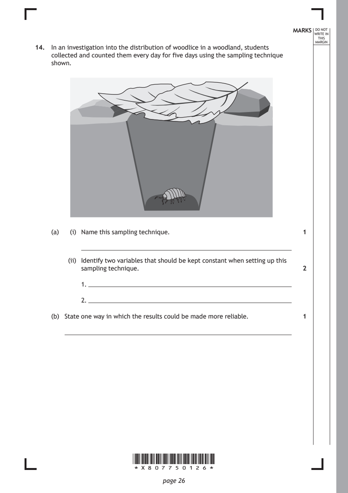
Selectable page text
MARKS _{W}^{D}_{R}^{O}_{I} _{T}^{N}OT
E IN
THIS
MARGIN
14. In an investigation into the distribution of woodlice in a woodland, students
collected and counted them every day for five days using the sampling technique
shown.
(a) (i) Name this sampling technique. 1
(ii) Identify two variables that should be kept constant when setting up this
sampling technique. 2
1.
2.
(b) State one way in which the results could be made more reliable. 1
*X807750126*
page 26PDF page 27
Paper 2, Question 15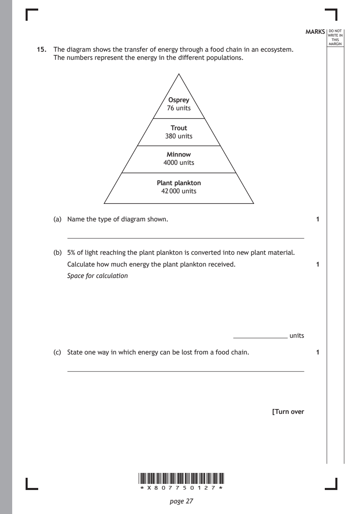
Selectable page text
MARKS _{W}^{D}_{R}^{O}_{I} _{T}^{N}OT
E IN
THIS
MARGIN
15. The diagram shows the transfer of energy through a food chain in an ecosystem.
The numbers represent the energy in the different populations.
Osprey
76 units
Trout
380 units
Minnow
4000 units
Plant plankton
42 000 units
(a) Name the type of diagram shown. 1
(b) 5% of light reaching the plant plankton is converted into new plant material.
Calculate how much energy the plant plankton received. 1
Space for calculation
����������������������������� units
(c) State one way in which energy can be lost from a food chain. 1
[Turn over
*X807750127*
page 27PDF page 28
Paper 2, Question 16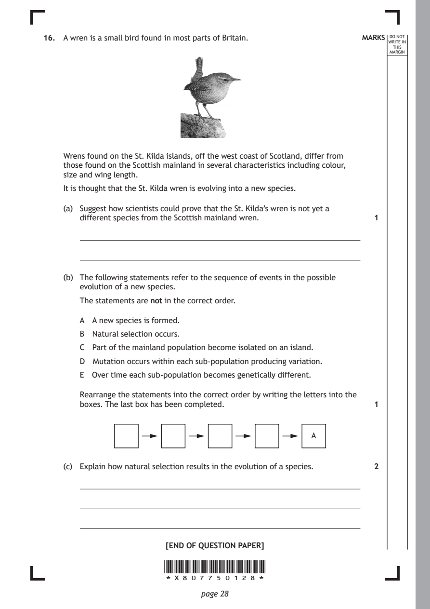
Selectable page text
16. A wren is a small bird found in most parts of Britain. MARKS _{W}^{D}_{R}^{O}_{I} _{T}^{N}OT
E IN
THIS
MARGIN
Wrens found on the St. Kilda islands, off the west coast of Scotland, differ from
those found on the Scottish mainland in several characteristics including colour,
size and wing length.
It is thought that the St. Kilda wren is evolving into a new species.
(a) Suggest how scientists could prove that the St. Kilda’s wren is not yet a
different species from the Scottish mainland wren. 1
(b) The following statements refer to the sequence of events in the possible
evolution of a new species.
The statements are not in the correct order.
A A new species is formed.
B Natural selection occurs.
C Part of the mainland population become isolated on an island.
D Mutation occurs within each sub-population producing variation.
E Over time each sub-population becomes genetically different.
Rearrange the statements into the correct order by writing the letters into the
boxes. The last box has been completed. 1
A
(c) Explain how natural selection results in the evolution of a species. 2
[END OF QUESTION PAPER]
*X807750128*
page 28PDF page 29
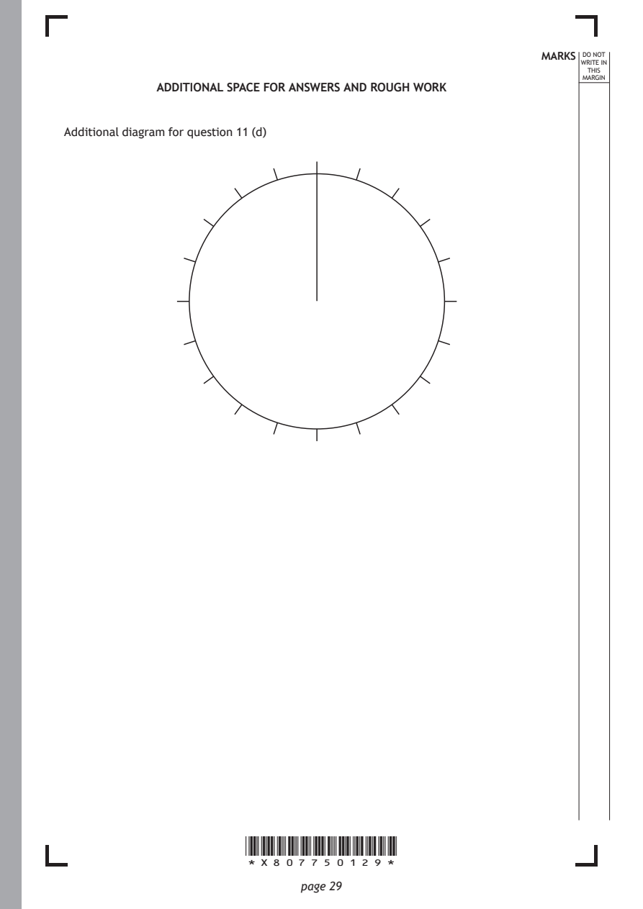
Selectable page text
MARKS _{W}^{D}_{R}^{O}_{I} _{T}^{N}OT
E IN
THIS
MARGIN
ADDITIONAL SPACE FOR ANSWERS AND ROUGH WORK
Additional diagram for question 11 (d)
*X807750129*
page 29PDF page 30
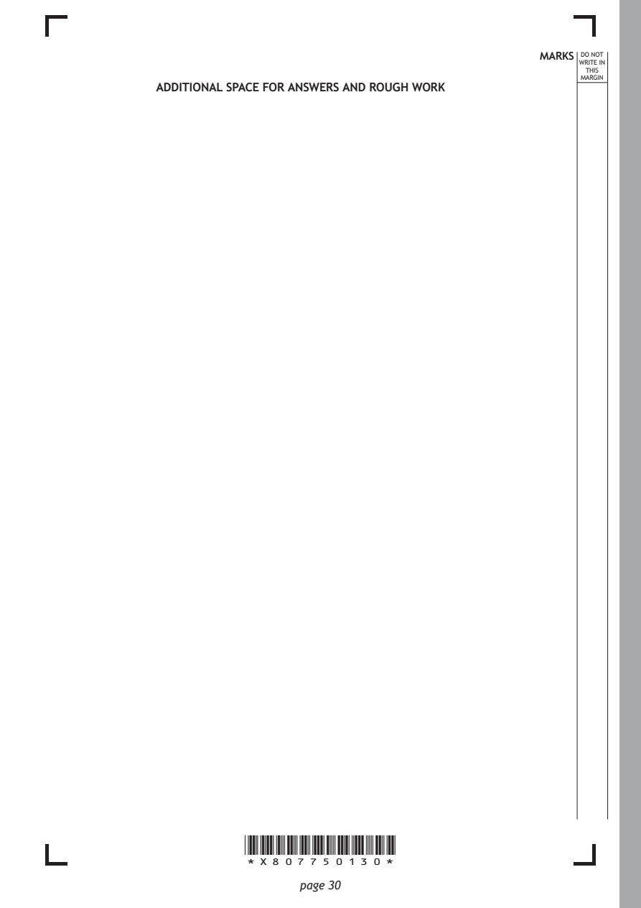
Selectable page text
MARKS _{W}^{D}_{R}^{O}_{I} _{T}^{N}OT
E IN
THIS
MARGIN
ADDITIONAL SPACE FOR ANSWERS AND ROUGH WORK
*X807750130*
page 30PDF page 31
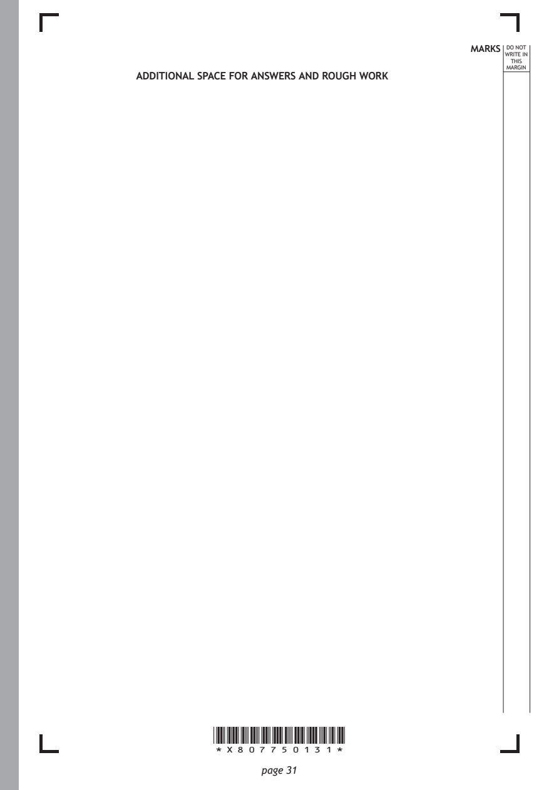
Selectable page text
MARKS _{W}^{D}_{R}^{O}_{I} _{T}^{N}OT
E IN
THIS
MARGIN
ADDITIONAL SPACE FOR ANSWERS AND ROUGH WORK
*X807750131*
page 31PDF page 32
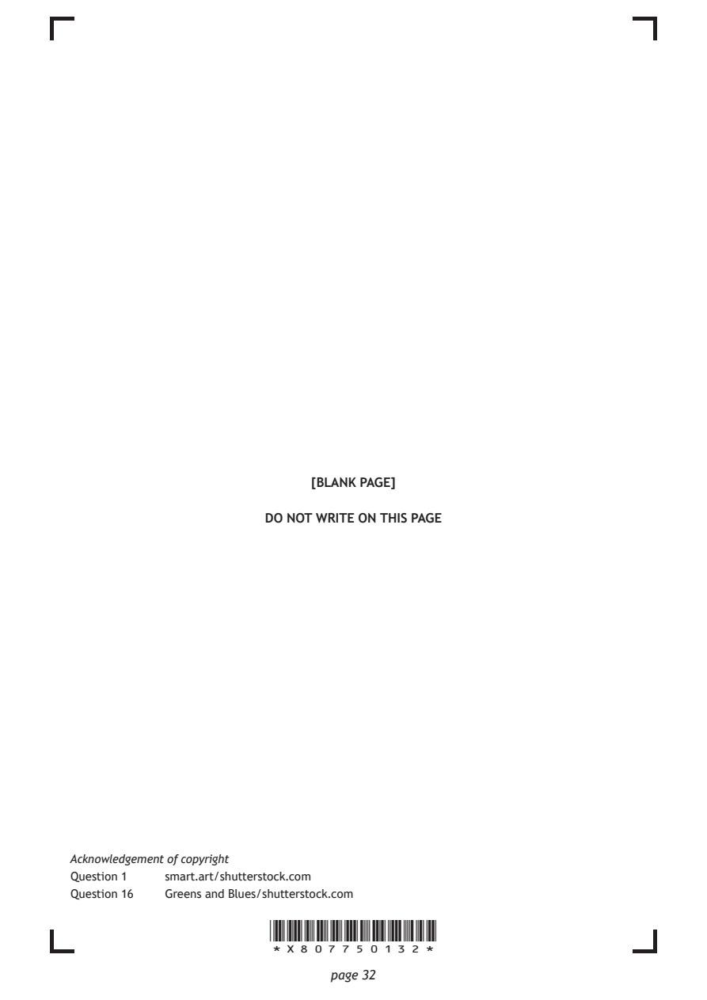
Selectable page text
[BLANK PAGE]
DO NOT WRITE ON THIS PAGE
Acknowledgement of copyright
Question 1 smart.art/shutterstock.com
Question 16 Greens and Blues/shutterstock.com
*X807750132*
page 32